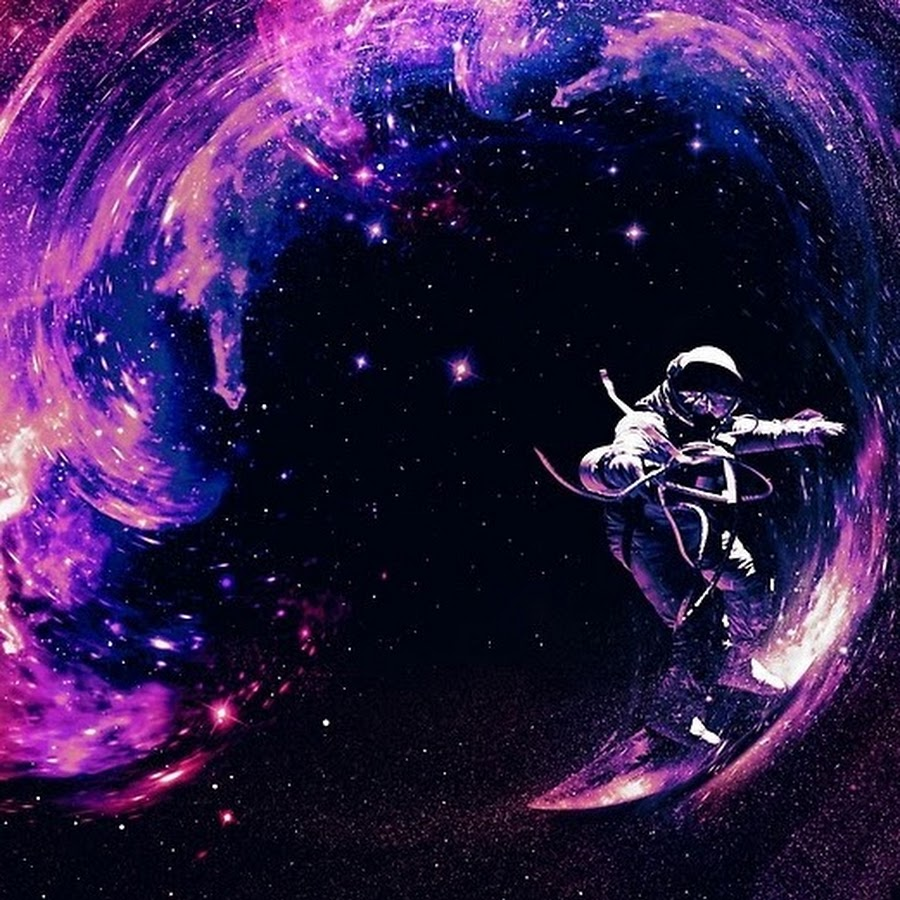

Синий космонавт
Далекий космос. Черная пустота. Издалека приближается синяя точка. Она растет и наконец закрывает собой половину неба. Это корабль синего космонавта.
Синий космонавт - герой космических глубин. Вся его жизнь прошла в космосе среди глыб темноты и точек света.
Он родился и умрет в беспредельной бескрайности. Он не ступал на землю уже многие годы.
Его корабль медленно умирает от старости - необходим ремонт.
Синий коcмонавт выходит в открытый космос для осмотра повреждений. Наружная поверхность корабля напоминает синий черепаховый панцирь. Крупные выпуклые шестигранники. Они сине-фиолетового цвета - все в зазубринах и шрамах от комической пыли.
Корабль меняет траекторию - и вдруг солнце жестким лучом бьет синего космонавта в глаза. Магнитные ботинки перестают удерживать синего космонавта и он по касательной удаляется от корабля. Их пути разошлись и теперь синий космонавт в одиночку летит в темноте.
Он похож на муху в черном янтаре. Время перестало для него быть. Он навсегда один без надежды на помощь - он забрался слишком далеко. У синего космонавта кончается кислород и в его голове бьется всего лишь одна мысль: "Салют мыла!".
Он делает попытки экономить воздух, задерживая дыхание. Это на удивление легко удается - нет даже привычного страха удушья. Через сто тысяч лет он вдыхает снова и опять не дышит.
В его голове звучит музыка космоса и он понимает всех тех, кто умер от остановки дыхания. Это совсем не больно - даже приятно. Синий космонавт плачет от радости - многие люди испытывали такое счастье - и он вместе с ними. Он думает, что если так будет всегда, то не будет войн и суеты.
Он плачет, чувствуя любовь за тысячи парсеков - там остался его маленький сын. Синий космонавт никогда не видел сына. Синий космонавт понимает суть вещей, тайны движения и удовлетворенно улыбается.
Выдохнув остаткии воздуха, он погружается в оркестр космической пустоты и умирает в экстазе невыразимого счаcтья.